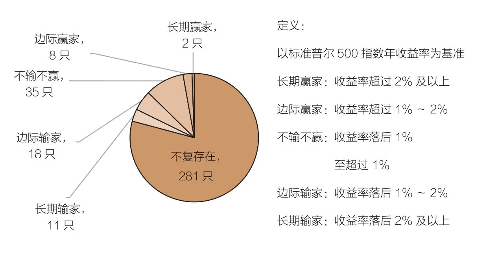
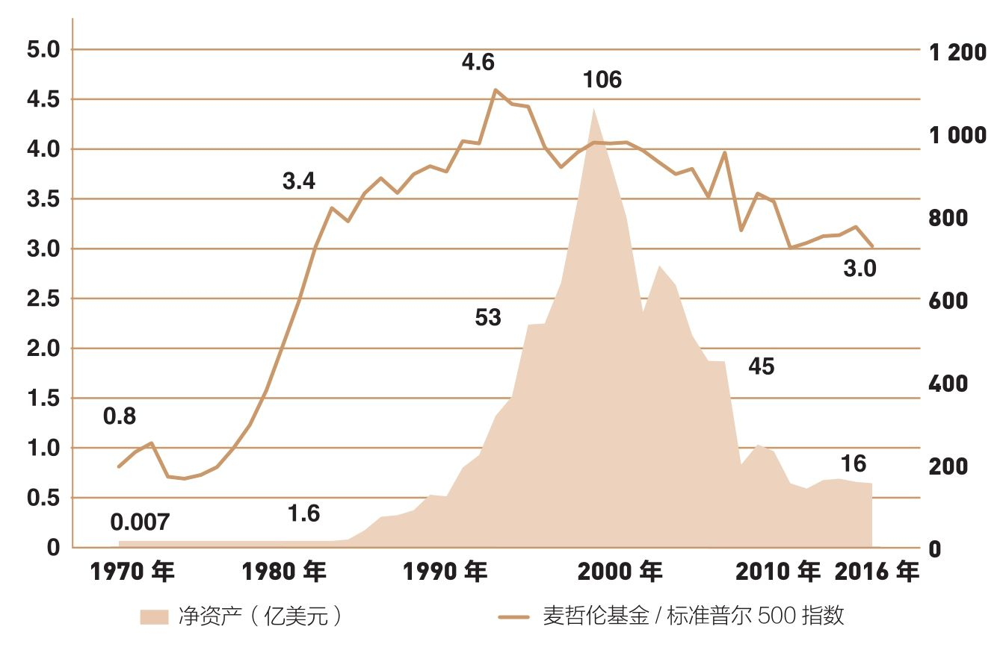

挑选业绩最好的基金就如同预测掷骰子的结果，连投资顾问都做不到，普通投资者又怎能做到？
巴菲特说：“大钱包就是超额收益的最大敌人。”你为什么还把钱投进那些张着狮子大口吸金的所谓热门投资产品中呢？
看到共同基金过去令人失望的业绩，大多数投资者会想：“的确如此，但是我会从中选出出色的基金！”听起来很容易，但事实上，提前选择能赚钱的基金远比我们想象的困难。当然，在投资市场上确实有长期赢家，但这类赢家并不多见。当然，只要认真看看以往的投资业绩，就很容易找到它们。
最为市场称颂的共同基金，必然是那些曾经以辉煌业绩为市场增光添彩的共同基金。而那些曾经业绩超群——即便保持了相当一段时间——而后一落千丈的基金，只能是过眼烟云。当它们不再辉煌的时候，往往会以破产而告终，被扔进共同基金历史的垃圾桶。
尽管识别以前的赢家并不难，但鲜有证据证明它们的业绩能延续到未来。我们首先看看基金的历史业绩。图10-1总结了创建于1970年的355只股票基金此后46年的业绩发展情况。首先，最惊人的事实摆在你面前：已经有281只基金不复存在，占比接近80%。如果你投资的基金都不能长久，那么长期投资又从何谈起呢？

图10-1 赢家与输家：共同基金的长期收益，1970—2016年
你尽可以放心大胆地假设幸存的基金不一定业绩最好，但消亡的基金业绩肯定最差。某些情况下，这些基金经理会走人（主动型股票基金经理的平均任期不到9年）。大型金融集团可能会收购他们所管理的公司，并由这些新所有权人“对原有产品进行清盘”（事实上，这些大型集团主要想帮助自己的资本，而不是基金投资者的资本创造收益）。投资者自然会抛弃这些业绩不佳的基金。尽管基金破产的方式很多，但很少会有一种利于投资者。
即使是那些长期业绩极为稳健的基金，也是有可能走向衰亡的。当基金管理公司被行销公司收购时，后者往往野心勃勃。在它们看来，不管这些基金以前多么出色，它们现在都无法吸引新的投资者。当基金连续几年遭遇业绩下滑后，出现这样的想法也无可厚非。
遗憾的是，十多年前，这样的态度让整个基金业最长寿的参与者之一——道富投资信托基金（State Street Investment Trust，1925—2005年）也倒下了，被收购它的集团强迫结束营业。要知道，过去80年的风风雨雨都没有能让它倒下，其持续多年的不凡业绩依然让人印象深刻。道富的离去，对我来说如同某个家族成员的死亡。
总之，存在于1970年的股票基金中，已经有281只离开了，其中绝大多数业绩不佳。而幸存下来的29只基金，其年收益率也远远落后于标准普尔500指数，差距要超过1%。换句话说，前述两者合计，有310只基金，种种原因，业绩不佳。另外35只基金的收益，与标准普尔500指数相差无几，差距在1%以内。
因此，只有10只共同基金——相当于每35只基金中仅有1只基金——年收益率超过市场基准收益率1%。这就是现实：成功率实在太低了！而这10只基金中，有8只超过标准普尔500指数的幅度还不足2%，其优秀表现很可能是运气，而不是能力。
不过，市场还是为我们留下了2只业绩稳健的长期赢家。它们自1970年以来，每年收益率超越市场大盘2%以上。请允许我郑重介绍它们：富达麦哲伦基金（超过2.6%）和富达反向基金（超过2.1%）。
在近半个世纪里，每年收益率超过市场收益2%，这是一项了不起的成就。但这里出现了一个奇妙的事实。我们先来检查这两只基金的记录，再看一看能够学到什么。
图10-2表示麦哲伦基金的净资产（阴影），以及基金相对于标准普尔500指数的收益（金线）。金线上升，代表基金表现优于指数；金线下降，代表指数表现优于基金。

图10-2 麦哲伦基金与标准普尔500指数长期收益，1970—2016年
明星基金经理彼得·林奇在麦哲伦的全盛时期（1977—1990年）运营这只基金。他退休以后，5位不同的经理运营过这只基金(1)。关于基金表现，除了基金经理的才华，麦哲伦基金管理的资产规模也应考虑在内。
麦哲伦基金表现最好的时期是初创期，当时基金管理的资产刚达到700万美元。基金表现胜过标准普尔500指数的幅度，每年高达10%（麦哲伦基金的年化收益率是18.9%，而标准普尔500指数的年化收益率是8.9%）。1983年，这只基金的资产超过10亿美元，其业绩依然超过市场，但幅度已有所减缓，每年有3.5%（麦哲伦基金的年化收益率是18.4%，标准普尔500指数的年化收益率是14.9%）。这种情况持续到1993年，此时基金管理的资产达300亿美元。
此后，基金规模仍在增长，1999年年底达到峰值1 060亿美元，但其杰出业绩没能持续。1994—1999年，麦哲伦基金年收益率落后标准普尔500指数2.5%（麦哲伦基金是21.1%，标准普尔500指数是23.6%）。
进入21世纪，麦哲伦基金的业绩落后仍在持续，年化收益率落后标准普尔500指数1.8%（麦哲伦基金是2.7%，标准普尔500指数是4.5%）。此时，它管理的资产规模已显著下降，自1999年的1 060亿美元，一路下跌到2016年年底的160亿美元，跌幅达85%。因此，当麦哲伦基金表现优异时，资金就会大量流入；当它表现不佳时，资金就会大量流出。这就是投资者行为的典型案例。
迄今为止，反向基金和麦哲伦基金在前30年里，没有什么不同——先收获巨大成功，随后回归均值。1990年，威尔·丹诺夫（Will Danoff）开始担任反向基金的首席基金经理，在反向基金上创造的闪亮业绩无可挑剔。
在丹诺夫执掌前，这只基金年收益率超过标准普尔500指数1%（反向基金是12.6%，标准普尔500指数是11.6%）。丹诺夫任职期间，这个领先幅度扩大了3倍（反向基金是12.2%，标准普尔500指数是9.4%）。然而，它的收益率最终仍趋于平均数。在过去5年，反向基金年收益率已落后标准普尔500指数1.2%（反向基金是13.5%，标准普尔500指数是14.7%）。
成功总是与挑战并存。1990年，丹诺夫在接手这只基金时，反向基金资产总计仅有3亿美元。到2013年，其资产已超过1 000亿美元。在此后3年，反向基金的优异表现消失了，其年收益率落后标准普尔500指数1.5%（反向基金为12.8%，标准普尔500指数为14.3%）。至于未来如何，只有时间能给出答案。
当投资者注意到麦哲伦基金和反向基金创造的杰出业绩时，资金就会大量涌入，基金资产规模将会急剧扩张。但是，正如沃伦·巴菲特说过的：“大钱包是超额收益的最大敌人。”事实证明了这一点。就在这两只受欢迎的基金扩张时，它们的业绩开始衰退。虽然主动型基金很少能快速达到麦哲伦基金或反向基金那样的规模，但多数基金经理都会面临类似的难题：表现优异，资金流入；表现差劲，资金流出。这源于这个行业对基金收益率的极度敏感。
而且并不是所有富达的基金都像麦哲伦基金和反向基金那样经得起时间考验。富达资本基金就是一个失败的案例。它于1957年成立，是灯光下的明星之一。1965—1972年，它的累计总收益达到195%，而标准普尔500指数是80%。然而，在接下来的熊市里，它下跌了49%（标准普尔500指数跌去了37%）。它的资产从1967年的7.27亿美元，下降到1978年的1.85亿美元。随后，它被合并入另外一只富达基金。
对过去谈论得够多了，让我们一起谈谈未来吧。也许你想要投资麦哲伦基金或反向基金，因为它们过去的业绩实在亮眼，超过标准普尔500指数收益2～3倍（虽然近几年业绩下滑）。但是在那之前，请思考一下未来10年，甚至更长时间的发展，思考一只基金持续获得超额收益的概率。考虑基金现有规模，考虑基金通常会在25年内更换3次基金经理，考虑个人投资者终生持有同一只基金的可能性。最后，再考虑一只基金存活25年的概率。
即使是对一只在过去10年或更长时间获取了超额收益的基金来说，你也应该保持同样的怀疑。这是一个瞬息万变、竞争激烈的世界，在共同基金领域，没有人知道未来会发生什么，但我还是祝愿这些基金经理和基金持有者总有好运相伴。无论你做何决定，请不要忽略绝大部分投资者不太了解的因素，就是基金业绩的“均值回归”（均值回归拥有令人震惊的力量，我会在第11章里解释更多细节）。
从355只共同基金中挑选1只业绩长期优秀的基金，概率不足0.5%。不论如何分析历史资料，对共同基金投资者来说，找到拥有资深经理和优秀表现的基金，都只是个案，绝非常态，即使将时间限定在短期也是如此。
可以这么说，选择一只能长期战胜市场的共同基金，采用塞万提斯（Miguel de Cervantes）的说法，如同“在稻草堆里寻找一根针”。因此，我想为你提供一条建议：“与其在草堆里寻针，不如买下整个草堆！”
所谓“草堆”，就是包含整个股票市场的投资组合。我们可以通过低成本指数基金得到这个草堆。这样一只低成本指数基金的收益率基本会达到或超过355只基金中的345只（长期存活的74只基金中的64只，外加281只不复存在的基金）。我认为，在未来几年里，一只追踪标准普尔500指数的指数基金，必定会创造出等同于股票市场表现的业绩——这并不是什么魔术，而只是相当简明的数学规则。
如果你准备做一辈子的投资，通常有两种选择。
第一种，选择3～4只主动型基金，希望能够选中一只优秀基金，但这些基平均存活约10年，基金经理的任期平均约9年。结果可能是，你一辈子拥有过30～40只基金，每一只基金都有沉重的费用和换手成本。
第二种，投资1只费用低、交易成本少、包括众多股票的指数基金，即使没有任何基金经理，仍然可以追踪指数表现。事实上，没有任何一只主动型基金能够提供像指数基金一样稳定的表现。
我们知道，指数基金几乎可以为投资者带来股票市场的全部收益，而主动型基金都面临基金经理被更换的命运；我们也知道，很多基金早晚会被淘汰；我们还知道，成功的基金在吸引越来越多资金的同时，也在损害未来的成功。另外，我们不可能知晓基金的业绩在多大程度上依靠运气，又有多少来自能力。因此，仅凭以往的长期表现，我们根本不可能找到一只能够战胜市场的基金，更无法以此来保证未来的成功。在基金业绩方面，历史很少成为未来的序幕。
我们没有任何系统的方法，可以确保选中一只能够战胜市场的基金，即使观察基金过去的长期业绩也是如此。是的，这就像是在草堆里寻针。
沃伦·巴菲特在2013年致伯克希尔·哈撒韦公司股东的信中谈到他在遗嘱里指示应如何管理他妻子的信托基金。他没有试图挑选表现优异的主动型基金，而是指示受托人将90%的基金投资于“成本极低的标准普尔500指数基金”（我建议投资先锋集团的基金）。通常我们都认为，巴菲特属于在草堆里寻针的人，但他最终决定买下整个草堆。
还需要更多的建议吗？保罗·萨缪尔森用这样一个比喻，概括了挑选优秀基金经理有多难：“假设我们可以证明，在每20个酒鬼中，有1个可以通过改造成为有自制力的饮酒者。有经验的医生会说：‘即便确实如此，在实践中也难以让人信服，因为你永远也无法知道他是20个人中的哪一个。’”因此，作为投资者，你不要试图去草堆里寻找细小的针。
乔纳森·克莱门特斯（Jonathan Clements）是《华尔街日报》理财专栏“起步”（Getting Going）的专栏作家。他曾经提出这样一个问题：“你能挑出赢家吗？”他回答道：“即便是主动型基金最狂热的推崇者也会同意，大多数指数基金投资者都比他们赚得多。但是由于过度自信，这些家伙不愿放弃主动型基金。这难道不是自欺欺人吗？我想也是。挑选业绩最好的基金，就像是在预测掷骰子的结果一样。
“构建一只有效的多元化投资组合，你可能将70%的资金投资于包含整体股票市场的指数基金，剩余30%的资金投资于国际型指数基金。”
如果这些观点仍然不能让你信服，无法让你不去根据过去的业绩表现评估共同基金，那么请相信基金公司告诉你的。基金行业的每只基金都会认同我的结论：基金过去的业绩，无助于预测其未来业绩。请注意，每只基金的公开说明、营销资料或是广告中，都会特别注明（虽然字体太小，以至于常常不被人们注意）：“过去的业绩不能保证未来的结果。”它们的话，请一定要相信！
(1)2004年5月28日，《华尔街日报》报道：麦哲伦基金时任经理鲍勃·斯坦斯基表示，他希望能够每年持续战胜市场2%～5%，“我想要胜利”。在斯坦斯基的10年任期里，富达麦哲伦基金收益率每年落后标准普尔500指数1.2%。他在2005被人替换。这是一项残酷的事业。